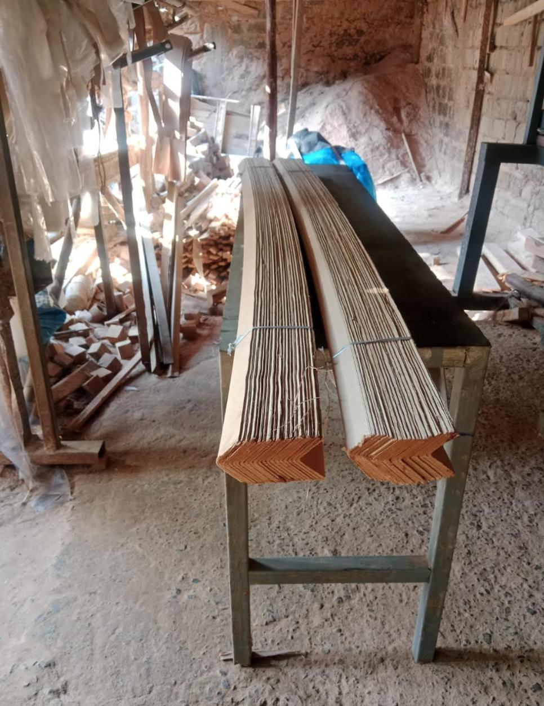

Whether it's a standard export pallet or a custom build, every unit that leaves Kiamumbi moves through the same four stages of production.
Eucalyptus, cypress, pine, and grevillia are drawn from our own managed farms and partner growers, selected for the load the finished pallet needs to carry.
Boards are sawn to size, planed by hand where precision matters, and assembled into deck boards, stringers, and angle board corners on our production floor.
Assembled pallets and wood packaging material are loaded into our kiln and held at a core temperature of 56°C for 30 minutes, satisfying ISPM 15.
Every treated unit is stamped, inspected for load capacity and finish, then stacked and loaded for the Port of Mombasa or Jomo Kenyatta International Airport.
Before a board ever reaches the kiln, it's sawn, planed, and checked by technicians who've spent years learning how eucalyptus and cypress behave under load.

Each board is planed and squared by hand before assembly, so the finished stringer or deck board sits flush and takes weight evenly rather than warping under a stacked load.
A retrofitted shipping container does the job of an industrial kiln: it holds every batch of pallets and angle board corners at temperature long enough to satisfy international phytosanitary rules.

Each load is brought to a core temperature of at least 56°C and held there for a minimum of 30 minutes, eliminating pests before the wood ever leaves the yard. The process is accredited by KEPHIS under Certificate No. PH/ISPM15/020, so every stamped unit clears phytosanitary checks at destination ports without delay.
Alongside our pallet line, a dedicated bench produces the angle board corners that protect cargo edges in transit, sized differently for sea and air freight.

Sea freight shipments take a 2400mm corner; air freight typically calls for 1600mm or 1000mm. Each length is cut and bundled on-site, ready to pair with a pallet order or ship on its own.